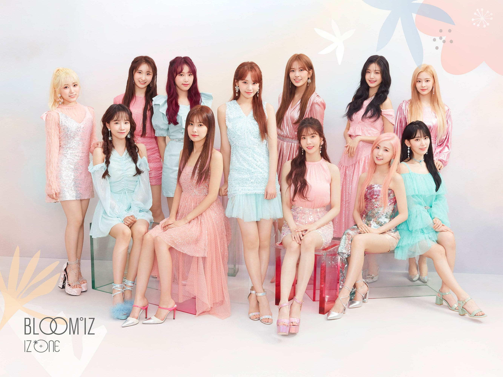

Iz*One (/ˈaɪz wʌn/ EYEZ-wun; Korean: 아이즈원, romanized: Aijeuwon; Japanese: アイズワン, romanized: Aizuwan) is a South Korean–Japanese girl group formed through the Mnet reality competition show Produce 48. The group, managed by Off the Record Entertainment, is composed of twelve members: Jang Won-young, Sakura Miyawaki, Jo Yu-ri, Choi Ye-na, An Yu-jin, Nako Yabuki, Kwon Eun-bi, Kang Hye-won, Hitomi Honda, Kim Chae-won, Kim Min-ju and Lee Chae-yeon.

Iz*One debuted on October 29, 2018 with their first extended play (EP) Color*Iz. Upon its release, the group received immediate commercial success, selling over 225,000 units and peaking at number 2 on South Korea's Gaon Album Chart. In addition, both the EP and its lead single "La Vie en Rose" charted on Billboard World Albums and World Digital Songs respectively.The early success subsequently hailed them as the New Artist of the Year at several awards shows, including Golden Disc Awards and Seoul Music Awards.